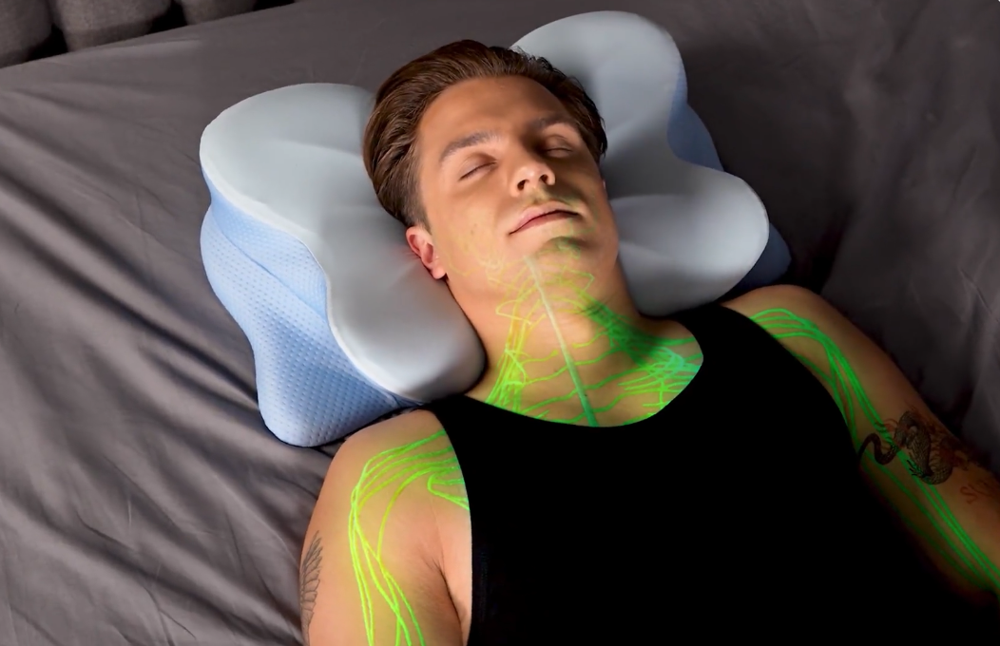

After 1,463 Nights in the Guest Room, a Strange German-Engineered Pillow Got Me Back Into My Husband’s Bed in 9 Nights
After every snore strip, spray, mouthguard, and CPAP failed — what finally helped quiet my husband’s snoring was a contoured ergonomic memory-foam pillow I almost didn’t try.
ByLinda Hartwell
9 min readReader-submitted
The pillow at the center of this story — Derila Ergo, photographed by the manufacturer.
It was a Tuesday in October 2021 when I picked up my pillow and walked down the hallway. I didn’t slam any doors. I didn’t cry. I just took the spare quilt out of the linen closet, made up the bed in the guest room, and lay down on sheets that smelled faintly of dust and lavender sachets.
It was 2:47 in the morning.
Through the wall, I could still hear it. The sound that had become the soundtrack of my life. A deep, ragged, mechanical snore — the kind that vibrates through plaster and bedposts and the bones of the woman trying to sleep beside it.
My husband, Robert, has been the love of my life since I was twenty-six years old. He is a kind man. A good father. A patient grandfather. He carries my groceries, makes me coffee every morning, and once drove four hours through a snowstorm to bring me back the reading glasses I’d left at my mother’s house.
And for nearly a decade, his snoring had been quietly destroying me.
That Tuesday night was the night I finally admitted I couldn’t do it anymore.
“Just for tonight,” I told myself, pulling the unfamiliar blanket up to my chin.
That “just for tonight” lasted 1,463 nights.
Four years.
Four years of sleeping alone in the guest room of my own house, married to a man I loved, while he slept fifteen feet away on the other side of the wall.
My name is Linda Hartwell. I’m fifty-eight years old. I live in a small town in Iowa, the kind of place where you wave at your neighbor when you check the mail. I’ve been married to Robert for thirty-one years, and we have two grown children and a granddaughter named Hazel who is six and demands that I read her exactly four books every Saturday afternoon.
I’m telling you this because I want you to understand: I am not a complainer. I am not someone who gives up easily. I raised two kids while working full-time at a county clerk’s office. I nursed my mother through Parkinson’s. I survived a basement that flooded three times in one spring.
I am, by nature, a woman who solves problems.
But Robert’s snoring was a problem I could not solve.
And what nobody tells you about a problem like that — the kind that erodes you slowly, night after night, year after year — is that it doesn’t just take your sleep.
It takes your marriage.
Quietly. Politely. While you’re both still pretending everything is fine.
It didn’t start out like this. Nothing ever does.
When Robert and I got married in 1995, he was a soft sleeper.
I remember our honeymoon in Door County — the small bed-and-breakfast with the squeaky floors and the lake view — and the first morning when I woke up before him and just watched him breathe. Quiet. Even. The kind of breathing that makes you understand why the word peace exists.
The snoring started sometime in his late thirties. Soft at first. A little hum. I’d nudge him and he’d roll over and it would stop. We’d laugh about it the next morning over pancakes.
Then came his forties.
The hum became a growl. The growl became a saw. By the time he was fifty, his snoring sounded like an old farm tractor trying to start in February.
It wasn’t cute anymore. It wasn’t something we laughed about over coffee. It was something I dreaded as the bedroom lamp clicked off every night.
And here’s the part nobody warns you about — the part that catches you off guard:
I started counting.
Counting the hours of broken sleep. Counting the times I had to nudge him in a single night (sometimes seven, eight, nine). Counting the migraines that had started showing up at 3 PM like clockwork. Counting the minutes I sat in the parking lot at work because I was too exhausted to drag myself inside.
I was sleeping, by my best estimate, around three to four hours a night.
For years.
The exhaustion was the obvious cost.
What I didn’t expect was the resentment.
It crept in slowly, like water under a door. I would lie there at 1 AM, staring at the ceiling, and I would catch myself thinking thoughts that horrified me.
How can he sleep through this?
Doesn’t he care that I’m suffering?
If he loved me, he would do something.
Then I’d remember — he had done something. He’d done a lot of things. (We’ll get to that in a minute.) None of it had worked.
But at 1 AM, with my eyes burning and my husband’s snoring rattling the headboard, logic does not live in your head.
Resentment lives there. And resentment, I’ve come to learn, is one of the quietest poisons in any marriage.
· · ·
We tried everything. And I mean everything.
Robert is not the kind of man who ignores a problem. When I finally told him, in tears, how bad things had gotten — somewhere around year three of his snoring — he was devastated.
“Why didn’t you tell me sooner?” he kept saying.
The truth was, I had told him. I’d been telling him for years. He just hadn’t understood what it was costing me until he saw me crying at the breakfast table over a piece of cold toast.
From that morning on, Robert was on a mission.
First: the nasal strips. You’ve seen them at the drugstore — the little adhesive bandage you stick across the bridge of your nose. Robert wore them every night for two months. I think they reduced the snoring by about ten percent for the first hour, and then his nose got used to them and the volume returned to baseline. Cost: $36 a month. Result: I bought earplugs in bulk.
Next: the throat sprays. Robert tried four different brands. Some tasted like menthol. Some tasted like burnt licorice. One tasted, he claimed, like “old swimming pool.” They all promised to coat the soft tissues in his throat and reduce vibration. One brand worked for about a week before his throat got irritated. The rest did nothing at all.
Then: the mouthguard from the dentist. Custom-fitted. $480 out of pocket. The dentist showed us animations of how it pulled the lower jaw forward to keep the airway open. Robert wore it for six weeks. He hated it. It made his jaw sore, gave him a small but persistent overbite when he took it out in the morning, and made him drool on his pillow like a teething infant.
The snoring was slightly quieter. But still loud enough to wake me through earplugs.
Then we went to the ENT. The specialist examined Robert, looked up his nose, peered down his throat, and ordered a sleep study. We drove forty miles to a sleep clinic where Robert spent the night wired to seventeen different sensors. The diagnosis: moderate obstructive sleep apnea. The recommendation: a CPAP machine.
I want to be very clear about what I’m about to say.
If your doctor has prescribed a CPAP machine, please use it. Sleep apnea is a real medical condition with serious health consequences, and CPAP therapy is the gold standard treatment for a reason. This is just our story. Robert’s story.
He tried. He really did.
For eleven nights, he wore that mask. The first night he sounded like a deep-sea diver. The second night the seal broke and the air whistled out the side and woke us both up at 4 AM. The third night the strap left a red mark across his cheekbone that lasted until lunch.
On night eleven, he woke up at 2 AM, gasping, ripped the mask off, threw it across the room, and said:
“Linda. I cannot do this. I would rather snore until I die than wear this thing one more night.”
He went back to the ENT. They tried a different mask — nasal pillows instead of full-face. He lasted four nights with that one before his nostrils were so chapped he was bleeding.
The CPAP went into the closet. It is still there. (I checked, before writing this. The box has a small layer of dust.)
And that’s when I moved into the guest room.
Four years of “healthy compromise”
Here’s the part of the story I wish I’d been honest about sooner:
For most of those four years, I told myself it was fine.
I read articles online — you can find a thousand of them — with cheerful titles like “Why Sleep Divorce Might Be the Healthiest Thing for Your Marriage.” The articles always quoted some sleep specialist saying that good rest matters more than tradition, and that couples who sleep apart often report higher relationship satisfaction.
I clung to those articles the way drowning people cling to driftwood.
And on the surface, my marriage looked completely normal. Robert and I had breakfast together every morning. We watched the news. We took walks after dinner. We held hands in the grocery store like we were still in our thirties.
But something was missing. It took me a long time to find the word for it.
Intimacy.
Not just the physical kind — though yes, that suffered too — but the small, accumulated intimacy of two people sharing a bed.
The way you reach out at 3 AM and find a warm shoulder under your hand. The mumbled, half-asleep conversation about something you remembered to tell each other before you both drift off. The morning when one of you wakes up first and watches the other sleep for a minute before getting up to start coffee.
That’s thirty years of small moments. And we had stopped having them.
We were, to use the painful but accurate phrase a marriage counselor once used about another couple, “cohabitating like polite roommates.”
I didn’t want to be polite roommates with my husband.
I wanted my marriage back.
My sister-in-law sent me an article. I almost didn’t open it.
Patricia is my husband’s younger sister. She is a retired physical therapist, sixty-three years old, opinionated in the way that only retired physical therapists can be.
She had heard, through the family grapevine, about my situation. (My daughter Megan had mentioned it on a phone call. The grapevine in our family is efficient.)
One Saturday morning in November of last year, Patricia called me.
“Linda. I’m going to send you an article. I want you to read it. And I want you to actually read it, not just say you read it.”
I sighed. I had reached the point in this saga where every well-meaning suggestion felt like a small insult. Have you tried elevating his head? Have you tried cutting out dairy? Have you tried sleeping with a tennis ball sewn into the back of his pajamas?
Yes. We had tried the tennis ball. (The tennis ball did not work. Robert just slept on his side and snored at a different angle.)
But Patricia is family. So I said I’d read it.
The article was about cervical alignment and airway position during sleep. It was, frankly, the first thing I’d ever read on this topic that didn’t feel like marketing copy.
From the article Patricia sent — how a contoured pillow holds the cervical spine in alignment instead of letting the head pitch forward.
The premise was simple, and it made a kind of sense I had never seen explained anywhere else.
Most of us, the article explained, sleep on pillows that do one job: they prop our heads up. That’s it. They’re soft. They feel nice when you flop down. But they’re mostly just rectangles of stuffing.
The problem is what happens to your neck while you’re unconscious for seven or eight hours.
If your pillow is too thick, your chin gets pushed toward your chest. That can narrow the airway at the back of your throat — the exact place where snoring is loudest. If your pillow is too thin, your head tilts back and your jaw drops open, which can have the same effect. If your pillow is the wrong shape for the way you sleep, your neck twists in tiny, sustained ways that you don’t feel until you wake up sore.
The article explained that some sleep specialists believe pillow ergonomics can play a meaningful role in nighttime breathing comfort — not as a treatment for diagnosed sleep disorders, but as a contributing factor in how loudly and how often a person snores.
It wasn’t a cure. It wasn’t a miracle. It was a piece of the puzzle that almost nobody was talking about.
And then the article mentioned, almost in passing, a German-engineered ergonomic pillow that had been designed specifically around this problem. It was called Derila Ergo.
I read about it for three hours that night
I am, by nature, suspicious of new products. After everything we’d tried, I had developed a kind of allergy to anything that promised to fix Robert’s snoring. So I did what any reasonable, exhausted, 58-year-old wife would do. I sat at the kitchen table with my reading glasses and a cold cup of tea and I read.
I read the manufacturer’s claims. I read user reviews. I read the comments under user reviews. I read the disclaimers. I looked at the pillow from every possible angle.
Here’s what I learned.
A manufacturer’s demonstration of cervical alignment with the pillow in the back-sleeping position.
What it is
A contoured memory-foam pillow, German-engineered, designed for cervical alignment.
Foam
Slow-response viscoelastic. It compresses gradually and slowly returns to shape — the kind of foam quality memory-foam mattresses use.
Cover
Nylon-elastane blend. Breathable, machine-washable at 86°F, treated to resist dust mites.
Designed for back, side, and stomach sleepers (most contoured pillows commit to one).
Trial period
60 nights at home, full refund if you don’t love it.
Now — and this is important — Derila Ergo is not a medical device.
It does not claim to treat sleep apnea. It does not claim to cure snoring. The company is careful, in its own materials, to position it as a comfort and posture-support product, not a clinical treatment.
Which, frankly, was part of why I trusted it.
I have learned, after years of being lied to by snore-stopper manufacturers, that the products that overpromise are the ones that under-deliver.
There was one detail that made me decide
The detail was this: 60 nights.
Derila Ergo offers a 60-night home sleep trial. If you don’t love the pillow, you can return it for a full refund.
Sixty nights is a meaningful amount of time. It’s long enough that you can’t fool yourself with a placebo effect. It’s long enough to see whether the change is real or imagined. And it’s long enough that the company is essentially saying: we’re confident you’ll keep it.
I have come to learn that any product that asks you to bet sixty nights of comfort against a full refund is probably more confident than a product that just promises “satisfaction guaranteed.”
I ordered it.
It was a Tuesday night. The promotion at the time was 70% off the regular price. I checked my email three times to make sure I’d entered the right shipping address.
I didn’t tell Robert.
I’ll be honest: by that point in our marriage, I had brought home so many failed snore-stopper devices that he had developed a small, weary smile every time a new package arrived. “Another one, huh?” he would say, and I would nod, and we would both pretend to be hopeful. I didn’t want that smile this time. I wanted to wait until I knew.
The package arrived four days later.
I unboxed it in the bedroom while Robert was at the hardware store. The pillow came rolled and vacuum-sealed, the way good memory-foam products usually do. I cut the plastic and watched it slowly expand, taking shape on the bed like something quietly waking up.
It was firmer than my old pillow. Not hard — firm. The kind of firmness that holds its shape when you press down and slowly fills back in.
The contour at the bottom edge was unmistakable. When I lay down on it, my neck settled into the raised section like it had been waiting for it. I sat up. I lay down again on my side. The contour adjusted, supporting my neck without pushing my head too high. I lay down on my stomach — my preferred position for the last forty years — and the pillow was thin enough at the head section that I didn’t feel like my neck was bent backwards.
Huh. That was my entire thought process. Huh.
I put the new pillow on Robert’s side of the bed. I made the bed. I closed the bedroom door behind me and went downstairs to start dinner. I did not tell him.
· · ·
What happened over the next nine nights
Night One. Robert noticed the new pillow the moment he sat down on the bed. “Is this new?” he asked. I told him yes, I’d ordered it, just give it a try, please don’t make a big deal about it.
He shrugged. Lay down. “It’s firmer than what I had.” Then, after a few seconds: “But my neck likes it.”
I went to the guest room, as usual. I lay there in the dark, listening through the wall. The snoring started about twenty minutes after he turned out the light.
I remember thinking: Of course. Why did I think this would be different? But here’s the part I didn’t expect: the snoring was different.
Quieter. More even. Less of the gasping, sawing quality. More like the heavy breathing of someone in a deep sleep. It was still loud. I’m not going to lie. But it was different. I fell asleep listening to it, and I slept until 6 AM — almost six hours, which was the longest stretch I’d slept in years.
Nights Two and Three. Same pattern. The snoring was there, but softer than the old version, and there were stretches of nearly silent breathing that I could hear when the wind was right. I started leaving the guest-room door cracked open at night so I could listen. I felt strange about that. Like a teenager listening for her parents to come home.
Nights Four through Six. Robert noticed the change before I said anything. On the morning of night five, he came into the kitchen, rubbed his eyes, and said:
“I don’t know if I’m making this up. But I think I’m sleeping better.”
I asked him to elaborate. He said his neck felt better in the morning. He wasn’t waking himself up coughing the way he sometimes used to. He felt — and this is the word he used — “less foggy.”
I didn’t tell him I’d been listening through the wall.

The contour holds the head in line with the spine instead of letting the chin tip toward the chest — the small detail Robert’s old pillow could not do.
Night Seven. I cracked the guest-room door wider that night. I lay in bed, listening, and at some point I realized I was holding my breath.
Through the wall, I could hear Robert breathing. Heavy. Deep. But not loud.
I lay there for an hour, just listening. And then I cried, very quietly, because I had not heard my husband breathe like that since the late 1990s.
Night Eight. I almost went back to our bedroom. I stood in the hallway in my robe with my pillow under my arm, the same way I’d walked the other direction four years before, and I lost my nerve.
What if it’s a fluke? I thought. What if I go back and tonight is the night the snoring comes back?
I went back to the guest room. I felt foolish. But I went back.
Night Nine. I told Robert at dinner, with some difficulty, that I was thinking about coming back to our bed.
He set down his fork. He looked at me for a long time.
“Linda.” He cleared his throat. “I would like that.”
That night, I walked down the hallway with my pillow under my arm, in the opposite direction. I closed the bedroom door behind me. I lay down next to my husband for the first time in 1,463 nights.
He reached over in the dark and took my hand. Neither of us said anything.
I fell asleep before he did. I woke up at 6:30 AM. I had slept seven and a half hours, in my own bed, beside my own husband, for the first time since 2021.
I didn’t cry. I just lay there, very still, listening to him breathe.
What made the difference, as best I can tell
I’m not a sleep scientist. I’m a retired county clerk from Iowa. So please take everything that follows as one woman’s description of why this product seemed to work in her household, not a medical claim.
The contour is the whole point
Most pillows are rectangles. Derila Ergo is shaped — with a raised section along the bottom edge designed to support the natural curve of the neck. When Robert lies down on his back, the pillow holds his neck in alignment with his spine instead of letting his chin tip forward.
That single design choice is why it works for him. His old pillow let his head pitch forward as the night went on, which closed off his airway. This one doesn’t.
When the head sits in line with the spine instead of tipping forward, the airway stays open through the night.
Multi-position support
Robert is a back-and-side sleeper. He flips. He doesn’t mean to, but he flips. Most contoured pillows I’d looked into were optimized for one position only — usually back sleeping — and turned into a torture device the moment you rolled over. This one is shaped so the contour works on your back, on your side, and even on your stomach.
Side-sleeping position — the lateral edge of the contour cradles the cervical curve without pushing the head up.
Slow-response memory foam
The foam isn’t the bouncy kind. It’s the slow kind — the kind that compresses gradually under your head and slowly returns to shape when you move. Cheaper foams “remember” the wrong shape and develop a permanent dent over a few weeks. Slow-response viscoelastic foam holds up better.
Stacked Derila Ergo pillows — the slow-response foam holds its contoured shape under load.
Breathable cover, washable to 86°F
The cover is a nylon-elastane blend — light, breathable, machine-washable. Robert is a warm sleeper, especially in summer. This pillow doesn’t hold heat the way some memory-foam pillows do. The cover comes off, goes in the wash on cold, hangs to dry.
The cover unzips and goes straight into the washer at 86°F. Hang to dry.
Dust-mite resistant treatment
Robert has mild seasonal allergies. The cover is treated to resist dust mites — a small but meaningful detail when you’re sharing a pillow with your face for eight hours a night.
The 60-night trial
Sixty nights. If the pillow doesn’t work for you, you send it back for a full refund. That’s a meaningful guarantee. It’s also why I felt comfortable ordering one without telling Robert — I knew that if it didn’t work, I could quietly return it and we’d be back where we started.
A one-time purchase
Unlike nasal strips ($36/month), throat sprays ($25/month), and various app-based snore trackers with monthly fees, the pillow is a one-time purchase. I added up what we’d spent on disposable snore products over the years. The pillow paid for itself in roughly four months — and it’s still on Robert’s side of the bed, eight months later.
How it stacks up against what we’d already spent on
A Practical Comparison
Targets neck alignment?
Derila Ergo: Yes — contoured. Standard pillow: No. Wedge pillow: Partially. Anti-snore mouthguard: No (jaw only).
Works in multiple sleeping positions?
Derila Ergo: Yes. Standard pillow: Yes. Wedge: Back only. Mouthguard: Yes.
Comfort over a full night?
Derila Ergo: Generally yes. Wedge: Restrictive. Mouthguard: Often uncomfortable, can cause jaw soreness over time.
Trial period?
Derila Ergo: 60 nights, full refund. Standard / wedge: Varies. Mouthguard: Usually none.
Comparison reflects general retail experience and Linda’s personal household; actual pricing and features may vary. This is not a substitute for medical advice for diagnosed sleep disorders.
What other couples have told me
After this article was first shared, I started getting emails. A lot of emails. From wives, husbands, adult children of snorers. Below are a few I asked permission to share.
5 of 5 · verified buyer
My husband and I had been doing the “sleep divorce” thing for almost three years. I felt embarrassed about it but I was running on fumes. I bought him this pillow honestly because I’d run out of ideas. The change wasn’t overnight, but by week two his snoring was noticeably softer and I started staying in our bed more nights than I left. We’re back to sleeping together full time. It’s not perfect, but it’s our marriage again.
— Eleanor S., 61 · Portland, OR
4 of 5 · verified buyer
I’m a side sleeper with chronic neck issues going back to a car accident in 2008. I bought the pillow more for the cervical support than the snoring. Honestly, my neck still hurts some mornings — the pillow isn’t a miracle — but I’m no longer waking up at 4 AM with it. My wife says I’m quieter, too. Four stars because nothing is perfect, but it’s the best pillow I’ve owned.
— David W., 67 · Charlotte, NC
5 of 5 · verified buyer
I’ve bought four anti-snore pillows over the years. Three of them were terrible. One was okay for a month and then went flat. The Derila is firmer than I expected, took me three nights to adjust, but the trial period meant I didn’t feel pressured. Eight weeks in I’m a believer. My husband notices it the most — says he’s waking up less often.
— Carol H., 55 · Indianapolis, IN
5 of 5 · verified buyer
I’m a side sleeper. Every pillow I’ve ever bought eventually compresses overnight and leaves my neck cranked at the wrong angle. This one keeps its shape. I wake up without that morning crick I used to live with. I can’t speak to the snoring claim — my husband says I’m quieter but also that I was “already pretty quiet” — but for cervical support, this is the real deal.
— Marie B., 53 · Tampa, FL
· · ·
A few things I want to be honest about
If you’ve read this far, you deserve the unvarnished version.
Robert still snores some nights. Not every night, but some. When he’s had a glass of wine with dinner. When he sleeps on his back instead of his side. When he has a cold. The pillow didn’t make him a silent sleeper.
What it did was take the snoring from “sleeping next to a tractor” to “sleeping next to a person who breathes deeply.” The first one is something you can’t live with. The second one is something you can.
It also took us about ten days to fully adjust to the firmness. Robert needed about a week before he stopped commenting on how different it felt. I needed two weeks before I trusted that the change was real and not a fluke.
And one more thing: Robert’s sleep apnea diagnosis didn’t go away. A pillow doesn’t cure sleep apnea. He went back to the ENT after three months on the new pillow and they offered him a different kind of oral appliance. He’s considering it. We are still working on his sleep, the way you work on anything that matters.
If you have apnea or any other diagnosed sleep disorder, please — please — follow your doctor’s advice. A better pillow is not a substitute for medical care.
But if you, like us, are exhausted, are sleeping in separate rooms, are running out of ideas, are watching your marriage become quieter and politer and emptier with every passing year — this is one thing worth trying. For sixty nights, with a full refund if it doesn’t work, the downside is small.
It’s late April now. We’ve slept in the same bed every night since November.
I am writing this at the kitchen table. Robert is in the backyard, putting up the trellis for the climbing roses my granddaughter Hazel insisted we plant for her birthday. It’s a small thing, but I noticed it this morning when I woke up:
The light came in through our bedroom window. Robert was already awake, reading. He looked over at me and said, “Morning, beautiful,” the way he used to in the 1990s, before any of this started.
I cannot explain how much I had missed that small, ordinary moment. For four years, the first face I saw every morning was the floral wallpaper in the guest room. Now it’s my husband’s.
I’m not telling you this pillow is going to save your marriage. I am not telling you it is going to cure anything. I am not telling you that what worked for Robert is going to work for the person sleeping (or not sleeping) beside you tonight.
What I am telling you is that I had given up.
I had genuinely accepted that the best version of my marriage I would ever have, going forward, was the polite-roommates version. I had grieved it. I had moved on, in the way you move on from things you cannot change.
And I was wrong.
If you’re lying awake right now, on the wrong side of a wall, listening to someone you love — if you’ve already given up — please don’t.
Sometimes the thing that fixes it isn’t the thing you’d expect. Sometimes it’s a pillow.
Linda H. Iowa · April 2026
Letters from Readers
52 received · comments closed for this issue
Janet M.received 1 day ago
Reading this in bed at 2:14 AM with my husband snoring next to me. I’ve been “just for tonighting” the guest room for almost two years. Linda, this is my story. I’m ordering one in the morning. Thank you for writing this.
Linda Hartwellreplied 1 day ago
Janet — you are not alone. The number of women in your situation would shock you. Give it a couple of weeks and let us know how it goes. Sending you rest.
Roy T.received 2 days ago
I’m the snorer. My wife sent me this article. I’ll be honest, I felt seen reading the part about Robert — the CPAP that I tried twice and couldn’t tolerate, the dentist’s mouthguard that gave me TMJ, all of it. We ordered the pillow last week. Three nights in. My wife says it’s noticeably softer at the “peak” volumes. I sleep better too. I’ll report back at 30 days.
Susan P.received 3 days ago
Question for anyone who’s tried it — I’m a strict side sleeper and I’ve had three contoured pillows that promised to work for side sleepers and were terrible. Is this one actually different? My neck pain is real and I don’t want to waste another sixty nights.
Karen L.replied 2 days ago
Susan, side sleeper here, 14 years of neck pain. The contour is shaped so the side of your face rests in the lower section while the raised edge supports the lateral side of your neck. It took me four nights to fully adjust. Now I genuinely cannot go back. Not a miracle — just better.
Dr. Gregory H.received 4 days ago
Retired family physician here. I want to commend the author for being explicit that this is not a substitute for medical care for diagnosed apnea. That responsibility is exactly right. For mild positional snoring, however, neck alignment via an ergonomic pillow is one of the most under-discussed contributing factors. Worth trying for many patients before more invasive interventions, in consultation with their physician.
Theresa F.received 5 days ago
The pillow felt steep at first until I added up what we’ve spent on snore strips, sprays, and that ridiculous $480 mouthguard from our dentist. We’ve been at this for six years. I bought the pillow with the 70% off promo, took advantage of the trial, kept it. Worth every dollar. Wish we’d tried it first.
Beverly M.received 6 days ago
My husband uses CPAP nightly and I want to add this for anyone in our situation: the pillow has been a gentle complement to his CPAP, not a replacement. He says it’s easier to wear the mask now because the contour gives the headgear straps somewhere to rest without bunching. Small thing, but for CPAP users, very meaningful.
Evelyn C.received 1 week ago
I cried reading Linda’s description of the four years apart. I’ve been there for nine years. Nine. My husband doesn’t even know I cry about it sometimes. We’re going to try this. Whatever happens, thank you for writing the part about how the resentment grows. I thought I was a bad person for feeling it. Now I know I’m just a tired one.
Linda Hartwellreplied 1 week ago
Evelyn, you are not a bad person. Sleep deprivation is its own kind of grief. We’re thinking of you. Please come back and let us know how things go.
Patricia R.received 1 week ago
For people on the fence: the 60-night trial is the real deal. We tried it, my husband didn’t love the firmness (he prefers a soft pillow), and we returned it. The refund came through in eight days. No hassle, no shipping fees on our end. So even if it doesn’t work for you, you’re not stuck. That’s why I felt comfortable telling my sister to try it.